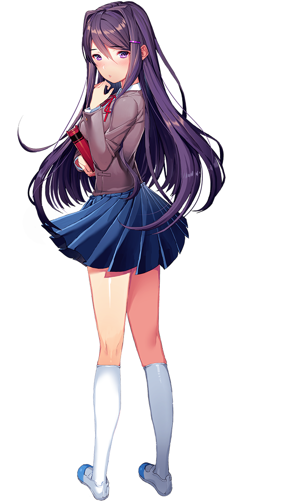

Doki Doki Literature Club is a horror game released in 2017. It was built and produced by Dan Salvato having been started in 2015. In this overview we will be going over all 4 acts of the game and the possible endings in which the player can encounter when playing the game. Below I have outlined all the characters of DDLC (Doki Doki Literature Club.) You can navigate to the different parts of the page with the buttons below (story contains spoilers.)
Characters
Monika Sayori

Monika is the president of the literature club
The character who you play knows her from
around the school. Throughout the game we
are given little chance to interact with Monika.
Her name is the only name which does not
end in an I and she is the only girl wearing
black socks, all this things combined set her
apart from the others and show that she is
different from the other characters we see
in DDLC. She is one of the fan favorites
and has several fan made games involving
her. Monika is certainly the most unique
characters and I personally think that she
has the most depth and characteristc
compared to the other characters in DDLC.
Sayori is a longtime friend of ours.
We have known her since we were
a kid. She is the girl who invites us
to the literature club. She is always
caring for others and puts a smile
on everyones face. She is the vice
president of the literature club.
Sayori has chin-length hair which is
curled at the end. She wears a pink
full length t-shirt at home and the
basic school uniform during school
hours.

Yuri one of the more shy members of the Literature club.
She adores reading, in particular she liked fantasy books
She is the tallest girl in the group and is also a fan favorite.
She likes dark things and has an obsession with knives with
a collection of different blades. During school she wears the
school uniform however outside of school she wears a white
sweater. She has purple hair which curls inwards at the ends.
She is 5'5" and appears in Acts 1, 2 and 4. Her eyes are a
light purple colour similar to her hair. She attempts to be
generous at all times and not be pushy when there is no need.
She is 18 years of age (so are all the other girls in the game.)
and her character file is named yuri.chr in the game files.